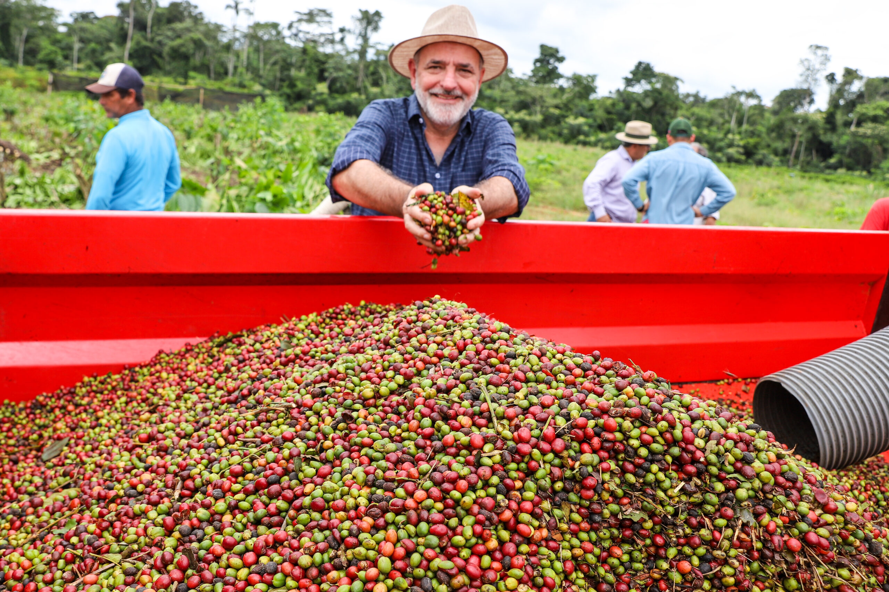

|
Cafeicultura familiar no Paraná |
|---|
|
|
Cafeicultura familiar no Paraná |
|---|
|
 |
A cafeicultura paranaense é composta por aproximadamente 8 mil produtores rurais,
sendo que 85% deles exploram a atividade em regime de agricultura familiar.
A cultura do café no Paraná é profundamente enraizada nas tradições familiares,
representando não apenas uma atividade econômica, mas um estilo de vida que tem moldado gerações.
Nos confins das fazendas paranaenses, essa cultura floresceu, onde o trabalho árduo e a paixão pelo café se entrelaçam.
As pequenas propriedades familiares são o coração dessa cultura, onde cada passo do processo de
produção é cuidadosamente executado, muitas vezes passando de pais para filhos. Desde o plantio
das mudas até a colheita, o café é tratado com um cuidado especial, refletindo o respeito pela terra
e pelo conhecimento transmitido ao longo dos anos.
Ao explorar a Cafécultura familiar do Paraná, você descobrirá uma jornada envolvente pelos bastidores
das pequenas propriedades onde o café é cultivado com paixão e dedicação.
A sustentabilidade ambiental é uma preocupação central para muitos desses produtores familiares.
Muitos adotam práticas agroecológicas, evitando o uso excessivo de agrotóxicos e fertilizantes
sintéticos, e buscando preservar a biodiversidade local. Além disso, iniciativas como a compostagem,
o manejo integrado de pragas e a rotação de culturas são comuns, contribuindo para a saúde do ecossistema agrícola.
|
|---|